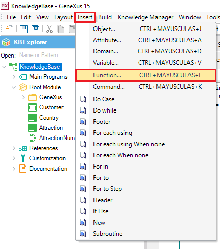
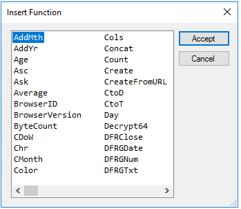
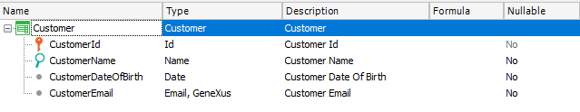
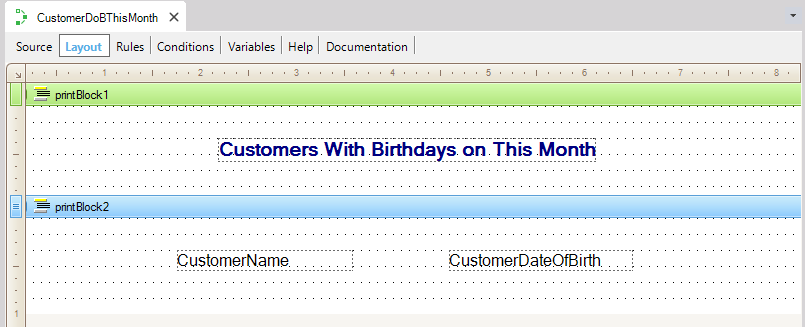
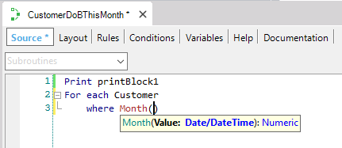
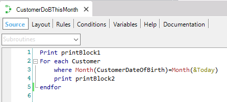
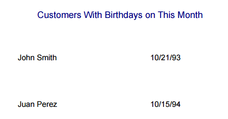

GeneXus offers functions that can be used inside the different GeneXus objects sections (such as in the source of procedures, inside events, or when defining a formula or a rule, and many others), in order to obtain a value that can then be assigned to a variable or an attribute, or just evaluated or shown, etc. You can select Insert/Function... being in a specific object section, and the following dialog will be open in order to choose one function:   ExampleConsider the following Customer transaction:  Suppose you need to define a list of all the customers whose birthdays are in the current month. So, you create a Procedure object with the following layout:  You will need to use the Month function in the where clause. The following images show the procedure source; note that when the function is inserted, GeneXus displays a tooltip with the proper syntax:   The Today Variable (&Today), shown in the image above, is a pre-defined GeneXus variable that stores the current date. The following image shows the list in runtime:  |